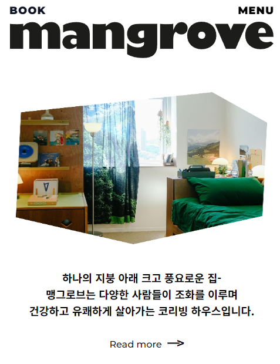

Mangrove

HTML5, CSS3, JavaScript 언어를 이용하여 지정한 레퍼런스 사이트의 디자인과 기능을 반응형웹으로 구현
Git Organization을 이용한 팀원들간의 소통을 통한 통일감있는 코드 작성
-> 팀원들 간의 pull과 push가 겹쳐 충돌이 일어남
-> 먼저 pull 작업으로 팀원들의 업데이트 내용을 내 로컬로 가져온 다음 push를 실행하여 원격저장소에 업데이트
merge Conflict 발생-> 한 파일을 중복으로 수정하여 수정부분에 충돌발생
-> : vs code의 source control에서 충돌 부분 병합 후 commit과 pull을 실행하여 원격 저장소 정보를 로컬로 가져온 후 push
-> 미디어 쿼리 적용 시 변화하는 사이즈 대응 문제
-> 팀원들과 논의를 통해 부모요소에 padding값을 주고 자식요소의 width값에 auto를 주어 width값이 자동으로 조절되게 함
-> 두가지가 결합된 플러그인을 찾아보려 했지만 찾지 못하였고 두가지 플러그인을 함께 사용하지 못함
-> 이후 Swiper 플러그인에 결합된 플러그인이 있다는 피드백을 받아, 앞으로 필요한 경우가 생기면 사용할 예정
처음하는 코딩 팀 프로젝트. 자바스크립트를 학습한지 얼마 되지 않아 아직 부족한 부분이 많았고 일부 기능부분에서 완벽하게 구현하는데 한계를 느끼기도 했다.
또 혼자 작업할 때 보다 팀으로 작업할 때 정해야 할 규칙들도 많고 규칙을 정하고 각자 제작을 한 이후에도 여전히 다른 부분들을 통일시키는데 더 많은 노력이 필요하다는 것을 느꼈다.
하지만 팀으로 함께 작업함으로써 양적인 부분에서 부담감이 덜했고 각자 파트를 통합하였을 때 개인작업보다 성취감이 더하였다.
첫 프로젝트라 처음엔 막연히 겁을 먹었었는데 팀원들이 각자 자신의 역할을 다해주었고 서로 필요한 부분을 도와가며 하니 꽤나 완성감있는 결과물을 볼 수 있었다.
이번 팀프로젝트를 발판삼아 다음프로젝트는 내가 부족한 부분들을 사전에 공부하여 좀 더 많은 기능들을 구현해보고 싶다.
발표&리뷰 더보기